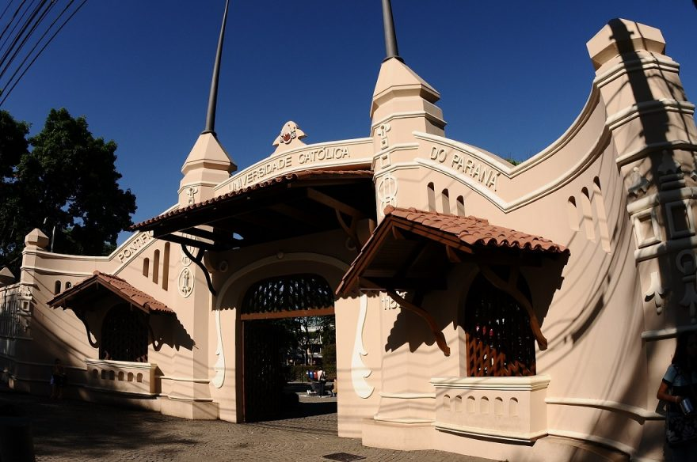

Ciência&
Vida&
Tecnologia.
Vida&
Tecnologia.
A era da informação chegou, e a PUCPR está preparada para enfrentar os desafios do século XXI.
O Bacharelado de Engenharia de Software na PUCPR une o conhecimento técnico com as metodologias modernas de ensino.
A Engenharia de Software é a área do presente e do futuro.